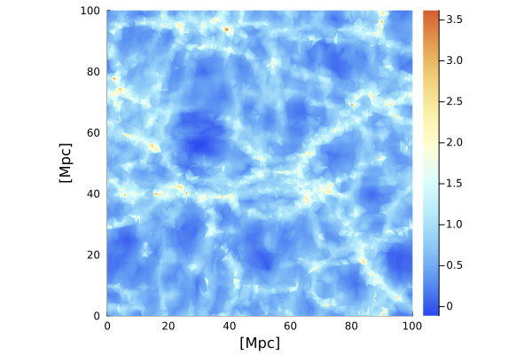
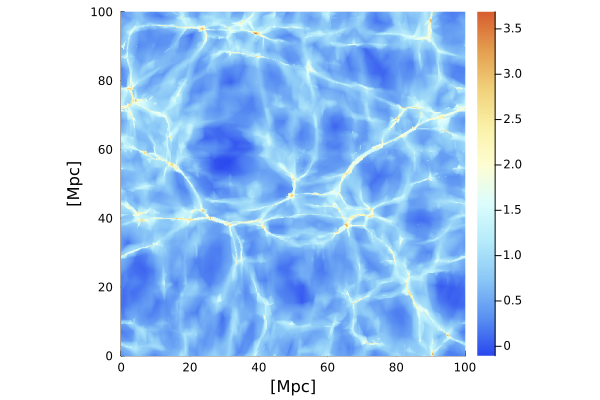
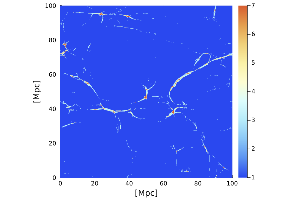
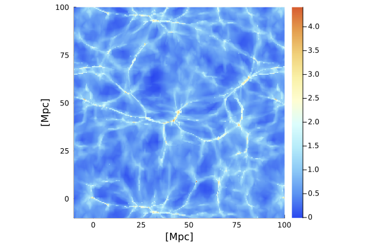
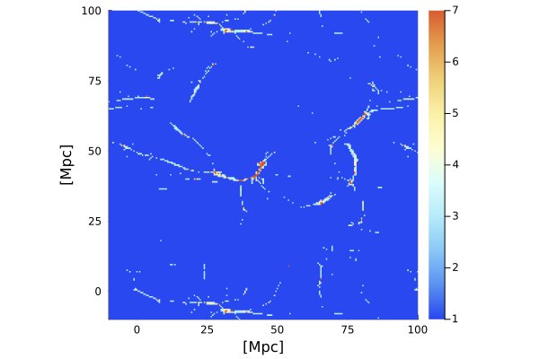
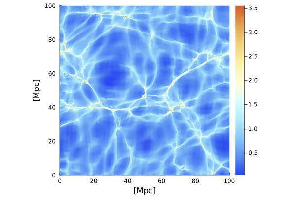

Tutorial
In this tutorial, we demonstrate the usage of the PhaseSpaceDTFE.jl package to estimate the density and velocity fields from a GADGET-4 simulation with 64³ particles.
We start by importing the relevant libraries and loading the data:
using HDF5, PhaseSpaceDTFE
import Plots # imported, as Plots also exports a function `density`
## set up simulation box
Ni = 64
L = 100.
sim_box = SimBox(L, Ni) ## need this for estimator creation
## load data
function load_data(file)
fid = h5open(file, "r")
pos = convert.(Float64, read(fid["PartType1"]["Coordinates"]))
vel = convert.(Float64, read(fid["PartType1"]["Velocities"]))
ids = read(fid["PartType1"]["ParticleIDs"])
time = read_attribute(fid["Header"], "Time")
close(fid)
ordering = sortperm(ids)
return (copy(pos[:,ordering]'), copy(vel[:,ordering]'), time)
end
function load_mass(file)
f = h5open(file, "r")
read_attribute(f["Header"], "MassTable")[2] # particle type 1
end
m = load_mass("../../test/data/snapshot_000.hdf5")
(coords_q, _, _) = load_data("../../test/data/snapshot_000.hdf5")
(coords_x, vels, _) = load_data("../../test/data/snapshot_002.hdf5")
nothingThe particle coordinates and velocities are Float64 matrices of size (N, 3), with one row per particle and the rows of coords_q, coords_x and vels in the same order. The particle mass m is a single number, or a vector of length N for simulations whose particle masses differ.
Prequel: Delaunay Tessellation Field Estimator
Before going through the PS-DTFE method, we demonstrate the traditional DTFE method by calling the PS-DTFE code on the final (Eulerian) particle positions only.
## construct estimator
dtfe = PS_DTFE(coords_x, coords_x, vels, m, sim_box)
## evaluate density field
Range = 0:0.2:100.
density_field = [density([L/2., y, z], dtfe) for y in Range, z in Range]
Plots.heatmap(Range, Range, log10.(density_field), aspect_ratio=:equal, xlims=(0, L), ylims=(0, L), c=:lighttemperaturemap, xlabel="[Mpc]", ylabel="[Mpc]")
Phase-Space Delaunay Tessellation Field Estimator
The estimator is constructed once from the initial (Lagrangian) and final (Eulerian) positions, coords_q and coords_x, and the velocities vels:
## construct estimator
ps_dtfe = PS_DTFE(coords_q, coords_x, vels, m, sim_box)
## if want to ignore velocities
# ps_dtfe = PS_DTFE(coords_q, coords_x, m, sim_box)
nothingPS_DTFE tessellates the initial positions in the periodic box, computes the density at every particle from the volumes of the evolved tetrahedra around it, and builds a cell index for the point location. This takes a few seconds for a 64³ simulation and needs about 1.1 kB of memory per particle (0.3 GB for 64³ particles, about 2.3 GB for 128³).
We now evaluate the density field with the density()-function:
# evaluate density field
density_field = [density([L/2., y, z], ps_dtfe) for y in Range, z in Range]
Plots.heatmap(Range, Range, log10.(density_field), aspect_ratio=:equal, xlims=(0, L), ylims=(0, L), c=:lighttemperaturemap, xlabel="[Mpc]", ylabel="[Mpc]")
The corresponding number of streams is evaluated with the numberOfStreams()-function:
nstreams_field = [numberOfStreams([L/2., y, z], ps_dtfe) for y in Range, z in Range]
Plots.heatmap(Range, Range, nstreams_field, aspect_ratio=:equal, xlims=(0, L), ylims=(0, L), clim=(1, 7), c=:lighttemperaturemap, xlabel="[Mpc]", ylabel="[Mpc]")
Points are taken modulo the box. Similarly, the velocity field is evaluated with the velocity()-function:
velocity([L/2., L/2., L/2.], ps_dtfe)3×3 Matrix{Float64}:
22.3145 -278.792 160.605
6.6267 -302.526 171.68
14.7473 -425.786 266.187In multistream regions, the velocity()-function returns the velocities of the individual streams, one row per stream (or [NaN NaN NaN] if single_stream=true is passed as the third argument). To obtain the stream-density weighted mean of the velocities, call the velocitySum()-function, which reduces to the velocity()-function in single-stream regions.
velocitySum([L/2., L/2., L/2.], ps_dtfe)1×3 Matrix{Float64}:
14.2096 -323.077 190.008The function inSimplices() returns the indices of the stored tetrahedra containing a point; ps_dtfe.simplices[i, :] are the rows of the particles at their corners.
Fields on a grid
Fields on regular grids are computed most efficiently with density_grid() and numberOfStreams_grid(), which rasterise the tetrahedra instead of locating every grid point. The result equals the point queries at the grid points. The grid ranges may extend beyond the box:
Range = -10:0.5:100.
density_field = density_grid(Range, Range, Range, ps_dtfe) # array indexed [ix, iy, iz]
Plots.heatmap(Range, Range, log10.(density_field[length(Range) ÷ 2, :, :]), aspect_ratio=:equal, xlims=(-10, L), ylims=(-10, L), c=:lighttemperaturemap, xlabel="[Mpc]", ylabel="[Mpc]")
nstreams_field = numberOfStreams_grid(Range, Range, Range, ps_dtfe)
Plots.heatmap(Range, Range, nstreams_field[length(Range) ÷ 2, :, :], aspect_ratio=:equal, xlims=(-10, L), ylims=(-10, L), clim=(1, 7), c=:lighttemperaturemap, xlabel="[Mpc]", ylabel="[Mpc]")
The z-planes of the grid are split over the available threads; start Julia with julia -t auto to use them.
For large simulations, whose estimator does not fit in memory, ps_dtfe_grid() computes the density and number of streams on a grid directly from the particles, without storing an estimator. It accepts the keywords of PS_DTFE_periodic and equals density_grid and numberOfStreams_grid of the corresponding estimator:
density_field, nstreams_field = ps_dtfe_grid(coords_q, coords_x, m, sim_box, Range, Range, Range)Grid values are point samples of the estimator. Near caustics, where the density is concentrated in thin multistream regions, the grid integral of the density converges to the total mass only as the grid is refined; the integral of the estimator itself equals the total mass exactly.
Options
PS_DTFE and PS_DTFE_periodic accept the following keyword arguments:
tessellation: the tessellation of the initial positions.:delaunay(default): the periodic Delaunay tessellation, for lattice, glass or other initial conditions. The positions are tessellated together with their periodic images within a frame of widthpad * L(by default four mean particle spacings). A smalljitter(default1e-5mean particle spacings) splits degenerate configurations, such as an exact lattice, consistently across the periodic images.:kuhn: the Kuhn (Freudenthal) split of the particle lattice, for lattice initial conditions withNi³ particles. Every cube of the lattice is split into the six tetrahedra that share its main diagonal, so every particle has the same star of 24 tetrahedra, and the estimator is exact for affine maps. The lattice site of every particle is recovered from its initial position, so the rows may be in any order.
vertex_density: the density at the particles.:mass(default): $\rho_i = 4 m_i / V(W_i)$, from the Eulerian volume of the star $W_i$ of the particle. Valid for any particle masses.:lagrangian: $\rho_i = \bar\rho\, V_L(W_i) / V(W_i)$, with the Lagrangian volume $V_L$ of the star. It assumes a uniform initial density and is then exact, also when the stars differ in size (glass initial conditions, the Delaunay tessellation) or the masses vary with the resolution (zoom simulations). Recommended with:delaunay.
G: the number of cells per side of the search index (defaultNi). A largerGgives faster point queries at the cost of memory.
kuhn = PS_DTFE(coords_q, coords_x, vels, m, sim_box; tessellation = :kuhn)
density_field = [density([L/2., y, z], kuhn) for y in 0:0.2:100., z in 0:0.2:100.]
Plots.heatmap(0:0.2:100., 0:0.2:100., log10.(density_field), aspect_ratio=:equal, xlims=(0, L), ylims=(0, L), c=:lighttemperaturemap, xlabel="[Mpc]", ylabel="[Mpc]")
Without periodic boundaries
With periodicity = :nonperiodic (or PS_DTFE_nonperiodic), the estimator uses the Delaunay tessellation of the initial positions without periodic images. The final positions are taken at the periodic image nearest to the initial positions, and the thin tetrahedra on the convex hull of the initial positions (with two corners further apart than three mean particle spacings along an axis) are removed; pass drop_simplices = false to keep them. Points are taken modulo the box, and a tetrahedron is only found at the points inside the box: matter that has crossed a face of the box is not wrapped around to the opposite face. density_grid and numberOfStreams_grid follow the same convention, so they equal the point queries. Away from the faces of the box the estimator equals the periodic one:
nonperiodic = PS_DTFE(coords_q, coords_x, vels, m, sim_box; periodicity = :nonperiodic)
density([L/2., L/2., L/2.], nonperiodic), density([L/2., L/2., L/2.], ps_dtfe)(18.340397513345415, 18.340397513345415)